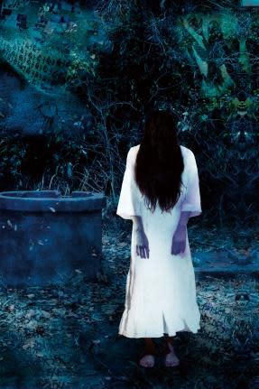
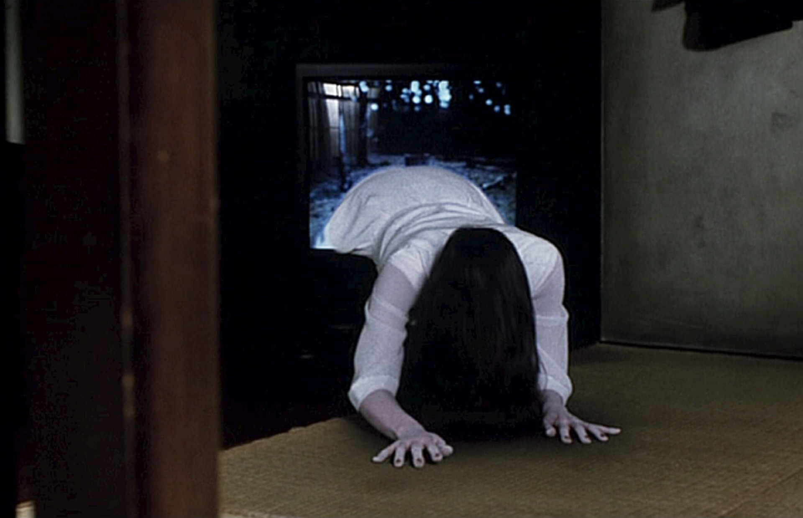
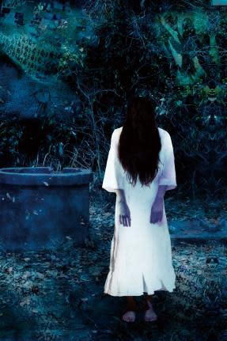
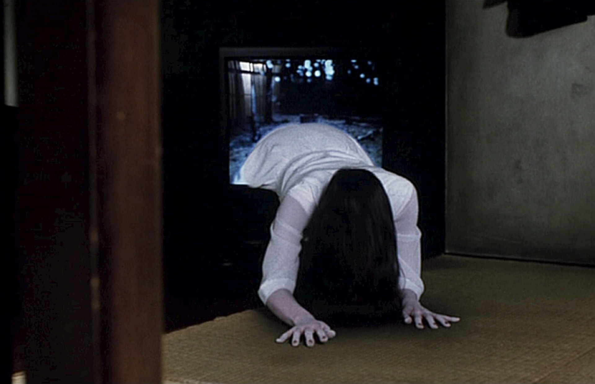

探索日本神秘的都市傳說
深入了解日本文化中那些充滿神秘色彩的都市傳說，從恐怖的靈異事件到令人驚奇的神秘生物。我們為您精選了日本五大著名都市傳說，帶您走進這些故事背後的驚悚與傳奇。。
五大都市傳說
裂嘴女
裂嘴女是一個日本都市傳說中經典的靈異人物。據說，她是一位遭受極大痛苦的女子，因嫉妒或懲罰被人割裂嘴巴，形成了駭人的笑容。她常在夜晚出現在偏僻的街道或巷弄中，戴著口罩，接近獨行的路人，低聲問：「我漂亮嗎？」無論回答什麼，傳說都無法逃過她的詛咒或攻擊。裂嘴女的故事充滿懸疑與恐懼，是日本靈異文化中的代表性傳說之一

花子
廁所的花子是日本校園都市傳說中的經典角色，據說她是一名小學生的幽靈，經常出現在學校三樓廁所的第三個隔間內。如果有人敲門並呼喚她的名字三次，她可能會現身並與召喚她的人互動。花子的故事因地區而異，有些傳說描述她是因意外或欺凌而去世的孩子，而有些則將她描繪為帶有惡意的靈體。廁所的花子以其神秘和驚悚的氣氛，成為日本靈異文化的代表性象徵之一。。
貞子
貞子是日本恐怖文化中最著名的靈異角色之一，最早源自作家鈴木光司的小說《午夜凶鈴》（Ring）。她是一名遭受極大痛苦和不公對待的女子，死後化為怨靈，透過詛咒錄影帶散播恐懼。觀看錄影帶的人會接到一通電話，並在七天後離奇死亡。貞子的標誌性形象是她凌亂的長髮遮住臉龐，從井中爬出的姿態更讓人心生寒意。她象徵了不公平對待的怨念和復仇的恐怖，是日本恐怖文化的經典代表之一。
 



搖來搖去
搖來搖去是一個令人不安的日本都市傳說，與夜晚的公園和空盪盪的鞦韆有關。據說，在某些偏僻的公園裡，會有一個孤獨的幽靈坐在鞦韆上，輕輕地來回搖動。這個幽靈通常是小孩的模樣，身穿舊式的白色和服，面無表情地盯著前方。如果有人靠近，她會緩緩轉頭，用空洞的眼神看著對方，輕聲說：「一起玩吧。」傳言說，如果拒絕，她會隨你回家，並在接下來的夜晚讓你感受到恐怖的「搖來搖去」，直到你無法忍受為止。
夢男
夢男是一個神秘且引人不安的都市傳說角色，據說他經常出現在人們的夢中，並以模糊而奇異的面容令人印象深刻。他的特徵是寬大的額頭、濃密的眉毛和詭異的微笑。據說，世界各地的不同人群都曾在夢中見過夢男，雖然彼此毫無聯繫，但夢中的場景和他的形象卻驚人地相似。一些傳說認為夢男是一種靈體，能夠穿越夢境進入人們的意識，或是某種警示的象徵。而另一些人則相信，他可能是一個邪惡的存在，利用夢境操控人類的思想與行為。夢男的傳說引發了許多對潛意識和集體記憶的猜測與討論。 。
關於我們


歡迎來到日本都市傳說網站！這裡是一個專注於收集和分享日本最神秘、最令人毛骨悚然的都市傳說的地方。無論是經典的貞子、恐怖的裂嘴女，還是校園中傳說的花子，我們致力於呈現這些故事的背景與細節，帶領你探索未知的恐怖世界。 我們的目的是將這些流傳於民間的靈異故事以引人入勝的方式呈現，讓更多人了解日本文化中的靈異傳說，並感受到它們的魅力與恐怖。 如果你對任何傳說有興趣，或者想要分享自己的故事，歡迎與我們聯繫！